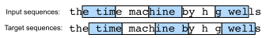

9.3. 语言模型¶
在 9.2节 中，我们看到了如何把文本序列映射为词元，这些词元可以看作单词或字符等离散观测值组成的序列。假设长度为\(T\)的文本序列中的词元依次为\(x_1, x_2, \ldots, x_T\)。 语言模型（language model） 的目标是估计整个序列的联合概率：
其中可以应用 9.1节 中的统计工具。
语言模型极其有用。例如，一个理想的语言模型应当能够自行生成自然文本，只需一次抽取一个词元\(x_t \sim P(x_t \mid x_{t-1}, \ldots, x_1)\)。 与用打字机打字的猴子大不相同，这种模型生成的所有文本都会被当作自然语言（例如英文文本）。此外，只需以先前的对话片段为条件，它便足以生成有意义的对话。 显然，我们距离设计出这样的系统还很远，因为它需要理解文本，而不仅仅是生成语法上合理的内容。
尽管如此，即便只是有限形式的语言模型也大有裨益。 例如，短语“to recognize speech”和“to wreck a nice beach”听起来非常相似。 这可能会在语音识别中造成歧义， 而一个把第二种转写视为荒诞而拒绝的语言模型可以轻松解决这一问题。 同样，在文档摘要算法中， 知道“狗咬人”比“人咬狗”常见得多，或者“我想吃奶奶”是相当令人不安的陈述、而“我想吃饭，奶奶”要温和得多，是很有价值的。
import torch
from d2l import torch as d2l
from mxnet import np, npx
from d2l import mxnet as d2l
npx.set_np()
from jax import numpy as jnp
from d2l import jax as d2l
import tensorflow as tf
from d2l import tensorflow as d2l
9.3.1. 学习语言模型¶
显而易见的问题是：我们应当如何对一个文档、甚至一个词元序列建模？ 假设我们在单词级别对文本数据进行词元化。 让我们从应用基本的概率法则开始：
例如， 一个包含四个单词的文本序列的概率可表示为：
9.3.1.1. 马尔可夫模型与\(n\)元语法¶
在 9.1节 介绍的那些序列模型分析中， 让我们把马尔可夫模型应用于语言建模。 如果\(P(x_{t+1} \mid x_t, \ldots, x_1) = P(x_{t+1} \mid x_t)\)，则序列上的分布满足一阶马尔可夫性质。阶数越高，对应的依赖关系越长。由此得到若干可用于对序列建模的近似：
分别涉及一个、两个和三个变量的概率公式 通常称为一元语法（unigram）、二元语法（bigram）和三元语法（trigram）模型。 为了计算语言模型，我们需要计算 单词的概率，以及给定前面几个单词时 某个单词的条件概率。 请注意， 这些概率是 语言模型的参数。
9.3.1.2. 单词频率¶
这里，我们 假设训练数据集是一个大型文本语料库，例如所有 维基百科条目、古登堡计划， 以及网络上发布的 所有文本。 单词的概率可以由给定单词在训练数据集中的相对 词频计算出来。 例如，估计值\(\hat{P}(\textrm{deep})\)可以通过 任何以单词“deep”开头的句子的概率来计算。一个 稍微不那么准确的方法是，统计 单词“deep”的所有出现次数，并将其除以 语料库中单词的总数。 这种方法效果相当好，尤其是对于频繁 出现的单词。接下来，我们可以尝试估计
其中\(n(x)\)和\(n(x, x')\)分别是单个单词 和连续词对的出现次数。 不幸的是， 估计 词对的概率要困难一些，因为 “deep learning”的出现频率要低得多。 特别是，对于一些不常见的词组合，可能很难 找到足够的出现次数来得到准确的估计。 正如 9.2.5节 中的经验结果所表明的， 对于三词组合及更长的组合，情况会变得更糟。 有许多看似合理的三词组合，我们可能不会在数据集中见到。 除非我们提供某种方案，给这类词组合赋予非零计数，否则我们就无法在语言模型中使用它们。如果数据集很小，或者这些词非常罕见，我们甚至可能连一次都找不到。
9.3.1.3. 拉普拉斯平滑¶
一种常见的策略是执行某种形式的拉普拉斯平滑（Laplace smoothing）。 解决方案是 给所有计数加上一个小常数。 用\(n\)表示 训练集中的单词总数， 用\(m\)表示不同单词的数量。 这一方案对单个出现的词有帮助，例如通过
这里\(\epsilon_1,\epsilon_2\)和\(\epsilon_3\)是超参数。 以\(\epsilon_1\)为例： 当\(\epsilon_1 = 0\)时不进行平滑； 当\(\epsilon_1\)趋于正无穷时， \(\hat{P}(x)\)趋于均匀概率\(1/m\)。 上面只是其他技术所能实现的一种相当原始的变体 (Wood et al., 2011)。
不幸的是，这类模型很快就变得笨重难用， 原因如下。 首先， 正如 9.2.5节 中所讨论的， 许多\(n\)元语法出现得非常少， 使得拉普拉斯平滑相当不适合语言建模。 其次，我们需要存储所有计数。 第三，这完全忽略了单词的含义。例如， “cat”和“feline”应当出现在相关的上下文中。 要让这类模型适应额外的上下文是相当困难的， 而基于深度学习的语言模型则非常适合 考虑这一点。 最后，长单词 序列几乎肯定是新颖的，因此仅仅 统计先前见过的单词序列频率的模型在这方面必然表现很差。 因此，在本章余下部分，我们专注于使用神经网络 进行语言建模。
9.3.2. 困惑度¶
接下来，我们讨论如何衡量语言模型的质量，然后将在后续各节中用其评估我们的模型。 一种方法是检查文本有多么令人惊讶。 好的语言模型能够高精度地预测接下来出现的词元。 考虑不同语言模型为短语“It is raining”给出的以下续写：
“It is raining outside”
“It is raining banana tree”
“It is raining piouw;kcj pwepoiut”
就质量而言，示例1显然最好。这些词合乎情理，逻辑上连贯。 虽然它可能并不完全准确地反映语义上接下来是哪个词（“in San Francisco”和“in winter”本来会是完全合理的扩展），但模型能够捕捉到接下来是哪一类词。 示例2则差得多，因为它产生了毫无意义的扩展。尽管如此，至少模型已经学会了如何拼写单词，以及单词之间的某种相关程度。最后，示例3表明模型训练得很差，没有恰当地拟合数据。
我们或许可以通过计算序列的似然来衡量模型的质量。 不幸的是，这是一个难以理解、也难以比较的数值。 毕竟，较短的序列比较长的序列更可能出现得多， 因此在托尔斯泰的巨著 《战争与和平》上评估模型，其似然必然远小于在圣埃克苏佩里的中篇小说《小王子》上评估的似然。这里缺少的是与“平均”相当的东西。
信息论在这里派得上用场。 我们在介绍softmax回归时 （ 4.1.3节 ）定义了熵、惊异度（surprisal）和交叉熵。 如果我们想要压缩文本，可以考察在给定当前 词元集合的情况下预测下一个词元。 更好的语言模型应当让我们能更准确地预测下一个词元。 因此，它应当让我们在压缩序列时花费更少的比特。 所以，我们可以用对序列中所有\(n\)个词元平均的交叉熵损失来衡量它：
其中\(P\)由语言模型给出，\(x_t\)是在时间步\(t\)从序列中观测到的实际词元。 这使得在不同长度文档上的性能可以相互比较。由于历史原因，自然语言处理领域的科学家更喜欢使用一个称为困惑度（perplexity）的量。简而言之，它就是 (9.3.7) 的指数：
困惑度最好理解为：当我们决定下一个选取哪个词元时，所拥有的实际选择数目的几何平均值的倒数。让我们看几种情形：
在最好的情形下，模型总是把目标词元的概率完美地估计为1。此时模型的困惑度为1。
在最坏的情形下，模型总是把目标词元的概率预测为0。此时困惑度为正无穷。
在基准情形下，模型在词表的所有可用词元上预测均匀分布。此时困惑度等于词表中不同词元的数量。事实上，如果我们要以不做任何压缩的方式存储该序列，这将是我们能对该序列做的最好编码。因此，这给出了任何有用的模型都必须超越的非平凡上界。
9.3.3. 划分序列¶
我们将使用神经网络设计语言模型， 并使用困惑度来评估 模型在给定文本序列中当前词元集合的情况下 预测下一个词元的能力。 在介绍模型之前， 让我们假设它 一次处理一个由预定长度序列组成的小批量。 现在的问题是如何随机读取输入序列和目标序列的小批量。
假设数据集的形式是corpus中由\(T\)个词元索引组成的序列。
我们将 把它划分
为若干子序列，其中每个子序列有\(n\)个词元（时间步）。
为了在每个轮次中 遍历整个数据集（几乎）所有的词元，
并获得所有可能的长度为\(n\)的子序列， 我们可以引入随机性。
更具体地说， 在每个轮次开始时， 丢弃前\(d\)个词元，
其中\(d\in [0,n)\)是均匀随机采样的。 序列的其余部分 随后被划分为
\(m=\lfloor (T-d)/n \rfloor\)个子序列。
用\(\mathbf x_t = [x_t, \ldots, x_{t+n-1}]\)表示从时间步\(t\)的词元\(x_t\)开始、长度为\(n\)的子序列。
所得的\(m\)个划分子序列 为
\(\mathbf x_d, \mathbf x_{d+n}, \ldots, \mathbf x_{d+n(m-1)}.\)
每个子序列都将作为输入序列送入语言模型。
对于语言建模， 目标是根据到目前为止已见到的词元预测下一个词元；因此目标（标签）是原始序列平移一个词元后的结果。 任何输入序列\(\mathbf x_t\)的目标序列 是长度为\(n\)的\(\mathbf x_{t+1}\)。

图9.3.1 从划分后的长度为5的子序列中得到五对输入序列和目标序列。¶
图9.3.1 展示了一个例子：当\(n=5\)、\(d=2\)时得到五对输入序列和目标序列。
@d2l.add_to_class(d2l.TimeMachine) #@save
def __init__(self, batch_size, num_steps, num_train=10000, num_val=5000):
super(d2l.TimeMachine, self).__init__()
self.save_hyperparameters()
corpus, self.vocab = self.build(self._download())
array = torch.tensor([corpus[i:i+num_steps+1]
for i in range(len(corpus)-num_steps)])
self.X, self.Y = array[:,:-1], array[:,1:]
@d2l.add_to_class(d2l.TimeMachine) #@save
def __init__(self, batch_size, num_steps, num_train=10000, num_val=5000):
super(d2l.TimeMachine, self).__init__()
self.save_hyperparameters()
corpus, self.vocab = self.build(self._download())
array = np.array([corpus[i:i+num_steps+1]
for i in range(len(corpus)-num_steps)])
self.X, self.Y = array[:,:-1], array[:,1:]
@d2l.add_to_class(d2l.TimeMachine) #@save
def __init__(self, batch_size, num_steps, num_train=10000, num_val=5000):
super(d2l.TimeMachine, self).__init__()
self.save_hyperparameters()
corpus, self.vocab = self.build(self._download())
array = jnp.array([corpus[i:i+num_steps+1]
for i in range(len(corpus)-num_steps)])
self.X, self.Y = array[:,:-1], array[:,1:]
@d2l.add_to_class(d2l.TimeMachine) #@save
def __init__(self, batch_size, num_steps, num_train=10000, num_val=5000):
super(d2l.TimeMachine, self).__init__()
self.save_hyperparameters()
corpus, self.vocab = self.build(self._download())
array = tf.constant([corpus[i:i+num_steps+1]
for i in range(len(corpus)-num_steps)])
self.X, self.Y = array[:,:-1], array[:,1:]
为了训练语言模型， 我们将以小批量的方式随机采样
成对的输入序列和目标序列。
下面的数据加载器每次从数据集中随机生成一个小批量。
参数batch_size指定每个小批量中子序列样例的数量，
num_steps是子序列的词元长度。
@d2l.add_to_class(d2l.TimeMachine) #@save
def get_dataloader(self, train):
idx = slice(0, self.num_train) if train else slice(
self.num_train, self.num_train + self.num_val)
return self.get_tensorloader([self.X, self.Y], train, idx)
如下所示， 通过把输入序列 平移一个词元， 就可以得到 一个小批量的目标序列。
data = d2l.TimeMachine(batch_size=2, num_steps=10)
for X, Y in data.train_dataloader():
print('X:', X, '\nY:', Y)
break
9.3.4. 小结与讨论¶
语言模型估计文本序列的联合概率。对于长序列，\(n\)元语法通过截断依赖关系提供了一种方便的模型。然而，语言中存在大量结构，但频率不足，无法通过拉普拉斯平滑有效地处理不常见的词组合。因此，我们将在后续各节中专注于神经语言建模。 为了训练语言模型，我们可以以小批量方式随机采样成对的输入序列和目标序列。训练后，我们将使用困惑度来衡量语言模型的质量。
语言模型可以通过增加数据规模、模型规模和训练计算量来扩展。大语言模型可以通过在给定输入文本指令的情况下预测输出文本，来执行所需的任务。正如我们稍后将讨论的（例如 11.9节 ）， 目前 大语言模型构成了各种任务中最先进系统的基础。
9.3.5. 练习¶
假设训练数据集中有100,000个单词。一个四元语法需要存储多少单词频率和多词相邻频率？
你会如何对对话建模？
你能想到哪些其他读取长序列数据的方法？
考虑我们在每个轮次开始时丢弃均匀随机数量的前几个词元的方法。
它是否真的能在文档的序列上产生完全均匀的分布？
你要怎么做才能使分布更加均匀？
如果我们希望一个序列样例是一个完整的句子，这在批采样中会带来什么样的问题？我们该如何解决？